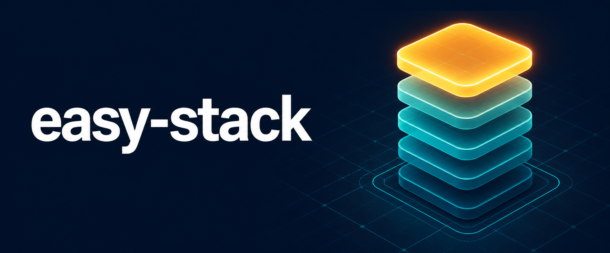

Strictly LIFO
The most recently added callback is always the next callback selected.
Zero dependencies · Node + browser
easy-stack is a small cooperative LIFO runner for priority work, staged requests, and flows where the most recently added task should execute next.
npm install easy-stack

The execution contract
The v2 package keeps the original cooperative model and makes its guarantees consistent across native ESM, CommonJS, and classic browser scripts.
The most recently added callback is always the next callback selected.
Each callback decides when the flow continues by calling this.next().
With auto-run enabled, the first eligible task begins before add() returns.
A thrown callback error returns the runner to idle without swallowing the error.
Focused documentation
Pick the page that matches the work in front of you. Each route stays short enough to scan and complete.
Install, import, and run a first cooperative stack.
ContractMethods, state, return values, validation, and errors.
DesignPriority insertion, pause gates, async hand-offs, and recovery.
WebNative modules, classic scripts, ES5 compatibility, and serving.
PracticeAdapt focused recipes, then continue in the interactive Playground.
ExperimentEdit and run isolated LIFO scenarios directly in the browser.
ChooseDecide whether newest-first or oldest-first fits your workload.
UpgradeKeep compatibility while adopting modern entry points.
EvidenceSee the vanilla-test suites, coverage gates, package smoke, and CI matrix.
SourceInspect the implementation, report an issue, or contribute.